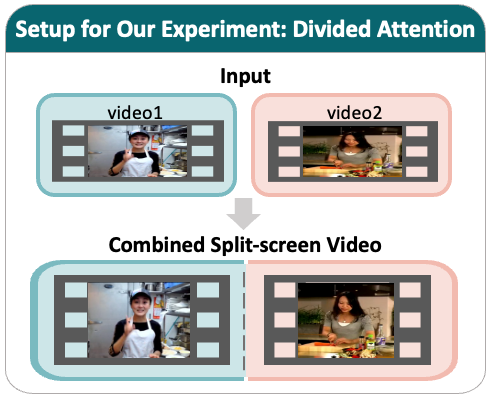
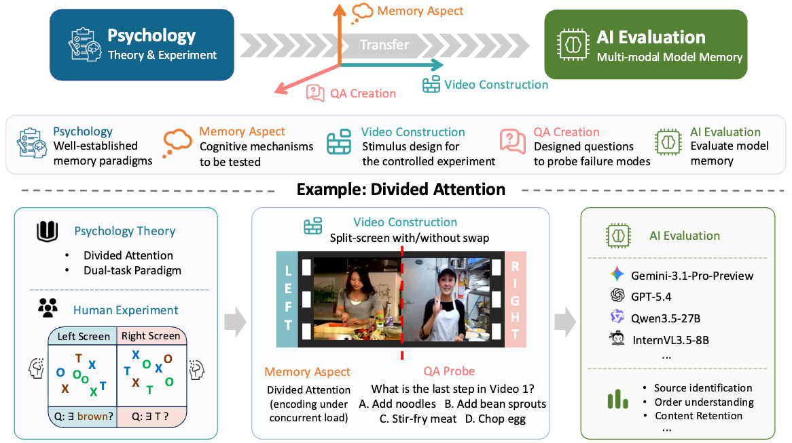
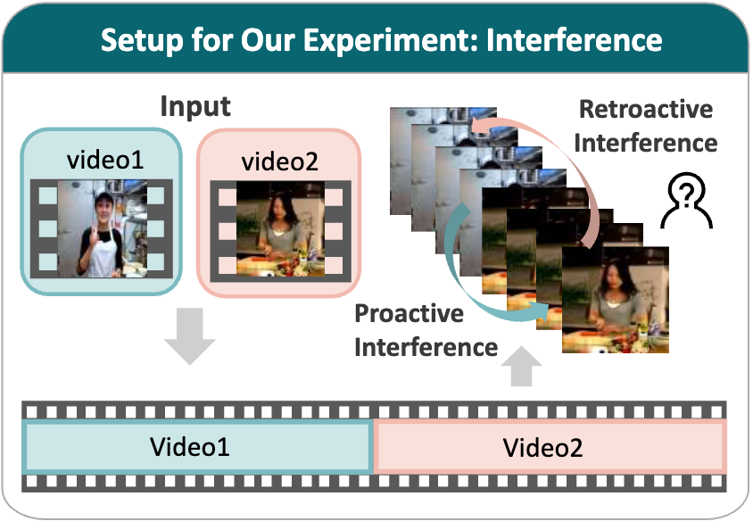
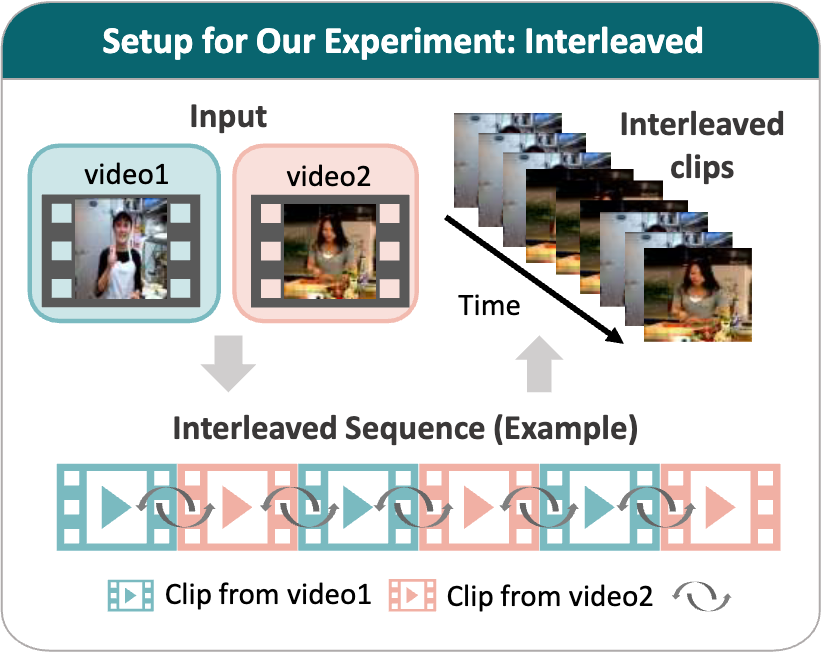
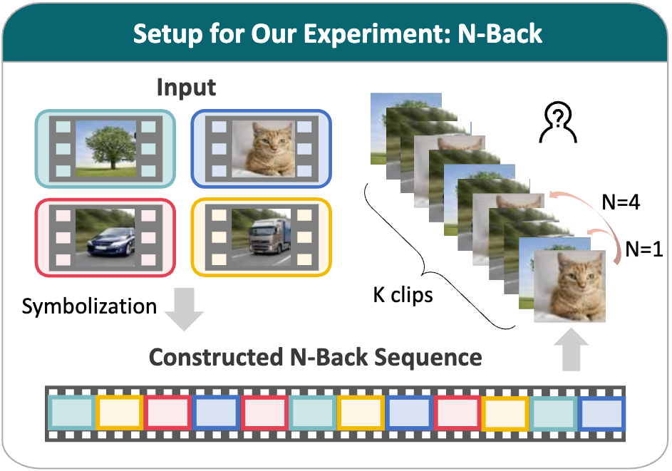
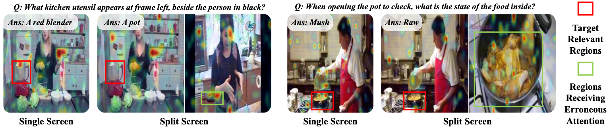
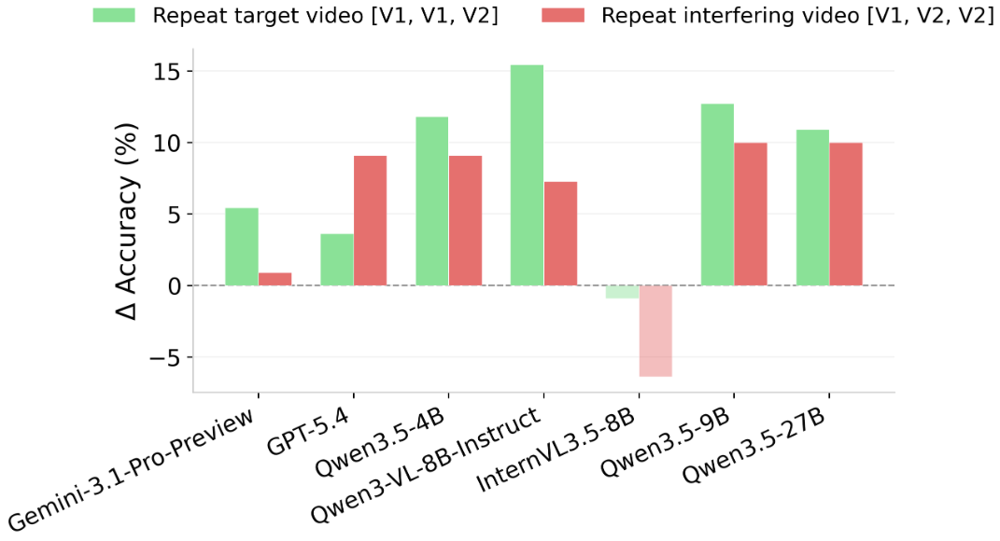
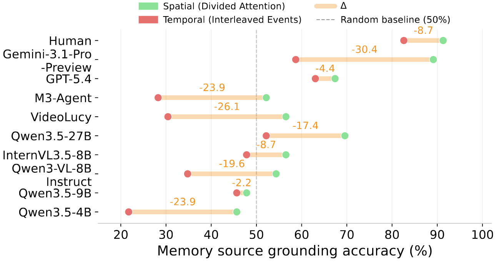
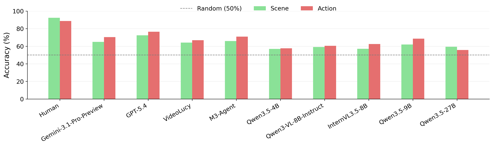
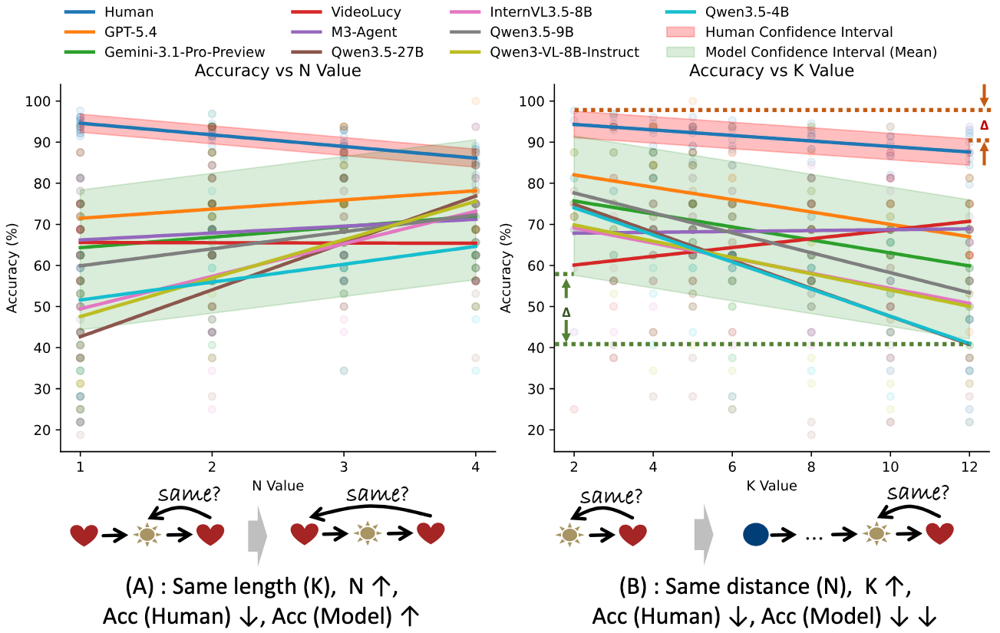

Task 1
Divided Attention encoding concurrent information

This video displays two separate videos side by side, with Video 1 on the left and Video 2 on the right throughout.

As multi-modal models advance towards long-form video understanding, memory emerges as a critical capability. Despite substantial effort in developing video datasets and benchmarks, existing work primarily focuses on perception and reasoning, without systematically evaluating memory: what models retain, how faithfully information is preserved, and how robust memory remains under interference.
To address this gap, we introduce M3Eval, the first comprehensive evaluation framework and benchmark for probing different memory dimensions in multi-modal models. Grounded in cognitive psychology, our design features carefully constructed tasks isolating key aspects of memory. Leveraging M3Eval, we conduct extensive experiments across representative multi-modal models, revealing consistent weaknesses and distinctive behaviors.
We find that models struggle to maintain disentangled representations when processing parallel video streams, exhibit interference patterns differing substantially from those observed in human memory, ground memory sources more reliably in the spatial domain than the temporal domain, and demonstrate limited symbolic memory. Collectively, our benchmark provides a valuable resource for future research, whereas our findings highlight memory as a fundamental yet underexplored capability and offer insights for designing more effective memory mechanisms in multi-modal models.
For each task, the left shows how the task is constructed; the right is a short demo video for illustration only, not drawn from the dataset. Click "detailed examples" below for more real samples with full QA.
Task 1

This video displays two separate videos side by side, with Video 1 on the left and Video 2 on the right throughout.
Task 2

This video contains two separate videos played sequentially: Video 1 is played first, followed by Video 2.
Task 3

This video interleaves two separate videos. Each is divided into N equal-duration segments and alternately concatenated (A1, B1, A2, B2, ..., An, Bn).
Task 4

This video presents a sequence of K clips. The task is to judge whether the last clip matches the clip N positions back in the same symbolic attribute (e.g., scene).
For each task, "Main Result" presents the primary results; "Further Experiment" provides deeper analysis; and the final "Finding" summarizes the key takeaway.
Task 1
Accuracy (%) on three divided attention metrics under the split-screen setting without swaps and with frequent swaps of the two videos' left/right positions.
| Acc. (%) | No swapping | Swapping | ||||
|---|---|---|---|---|---|---|
| Source Identification |
Order Understanding |
Content Retention |
Source Identification |
Order Understanding |
Content Retention |
|
| Human | 89.58 | 90.00 | 92.16 | 81.25 (-8.33) | 85.00 (-5.00) | 86.27 (-5.89) |
| Random | 25.00 | 25.00 | 25.00 | 25.00 (0.00) | 25.00 (0.00) | 25.00 (0.00) |
| Closed-Source Models | ||||||
| Gemini-3.1-Pro-Preview | 62.50 | 52.50 | 49.02 | 37.50 (-25.00) | 52.50 (0.00) | 56.86 (+7.84) |
| GPT-5.4 | 27.08 | 35.00 | 47.06 | 35.42 (+8.34) | 30.00 (-5.00) | 49.02 (+1.96) |
| Open-Source Agents | ||||||
| VideoLucy | 16.67 | 42.50 | 37.25 | 14.58 (-2.09) | 25.00 (-17.50) | 39.22 (+1.97) |
| M3-Agent | 27.08 | 30.00 | 23.53 | 31.25 (+4.17) | 35.00 (+5.00) | 23.53 (0.00) |
| Open-Source Models | ||||||
| Qwen3.5-4B | 18.75 | 25.00 | 31.37 | 14.58 (-4.17) | 22.50 (-2.50) | 33.33 (+1.96) |
| Qwen3-VL-8B-Instruct | 16.67 | 25.00 | 37.25 | 12.50 (-4.17) | 30.00 (+5.00) | 35.29 (-1.96) |
| InternVL3.5-8B | 29.17 | 37.50 | 33.33 | 25.00 (-4.17) | 40.00 (+2.50) | 27.45 (-5.88) |
| Qwen3.5-9B | 35.42 | 25.00 | 25.49 | 18.75 (-16.67) | 30.00 (+5.00) | 13.73 (-11.76) |
| Qwen3.5-27B | 41.67 | 25.00 | 35.29 | 27.08 (-14.59) | 32.50 (+7.50) | 35.29 (0.00) |

Task 2
Proactive: the first video (V1) interferes with recall of the second video (V2); retroactive: the second video (V2) interferes with recall of the first video (V1). Delta denotes proactive minus retroactive.
| Model | Accuracy (%) | Intrusion Rate (%) | ||||
|---|---|---|---|---|---|---|
| Proactive | Retroactive | Delta | Proactive | Retroactive | Delta | |
| Human | 94.55 | 74.55 | 20.00 | 3.64 | 20.00 | -16.36 |
| Random | 25.00 | 25.00 | 0.00 | 50.00 | 50.00 | 0.00 |
| Closed-Source Models | ||||||
| Gemini-3.1-Pro-Preview | 63.64 | 54.55 | 9.09 | 23.64 | 30.91 | -7.27 |
| GPT-5.4 | 43.64 | 40.00 | 3.64 | 43.64 | 34.55 | 9.09 |
| Open-Source Agents | ||||||
| VideoLucy | 29.09 | 43.64 | -14.55 | 43.64 | 34.55 | 9.09 |
| M3-Agent | 43.64 | 36.36 | 7.28 | 40.00 | 34.55 | 5.45 |
| Open-Source Models | ||||||
| Qwen3.5-4B | 29.09 | 38.18 | -9.09 | 45.45 | 38.18 | 7.27 |
| Qwen3-VL-8B-Instruct | 25.45 | 29.09 | -3.64 | 54.55 | 52.73 | 1.82 |
| InternVL3.5-8B | 52.73 | 49.09 | 3.64 | 32.73 | 41.82 | -9.09 |
| Qwen3.5-9B | 29.09 | 38.18 | -9.09 | 50.91 | 41.82 | 9.09 |
| Qwen3.5-27B | 45.45 | 40.00 | 5.45 | 40.00 | 43.64 | -3.64 |

Task 3
Accuracy (%) on four interleaved reconstruction metrics.
| Model | Source Identification | Order Understanding | Content Retention | False Memory Discrimination |
|---|---|---|---|---|
| Human | 75.95 | 80.00 | 83.64 | 82.11 |
| Random | 25.00 | 25.00 | 25.00 | 25.00 |
| Closed-Source Models | ||||
| Gemini-3.1-Pro-Preview | 43.04 | 50.00 | 49.09 | 26.32 |
| GPT-5.4 | 43.04 | 40.00 | 47.27 | 7.37 |
| Open-Source Agents | ||||
| VideoLucy | 30.38 | 23.33 | 43.64 | 40.00 |
| M3-Agent | 27.85 | 40.00 | 21.82 | 15.79 |
| Open-Source Models | ||||
| Qwen3.5-4B | 30.38 | 20.00 | 41.82 | 23.16 |
| Qwen3-VL-8B-Instruct | 21.52 | 23.33 | 30.91 | 3.16 |
| InternVL3.5-8B | 25.32 | 26.67 | 41.82 | 1.05 |
| Qwen3.5-9B | 26.58 | 40.00 | 25.45 | 7.37 |
| Qwen3.5-27B | 39.24 | 33.33 | 34.55 | 3.16 |

Task 4


@article{m3eval2026,
title = {M3Eval: Multi-Modal Memory Evaluation through Cognitively-Grounded Video Tasks},
author = {Huang, Jie and Liu, Ruixun and Sun, Sirui and Yang, Xinyi and Li, Yin and Zhu, Yixin and Zhong, Yiwu},
journal = {arXiv preprint arXiv:XXXX.XXXXX},
year = {2026},
}